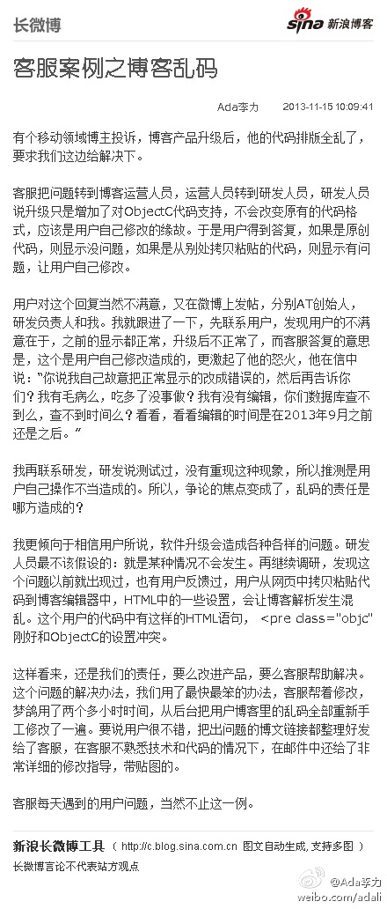
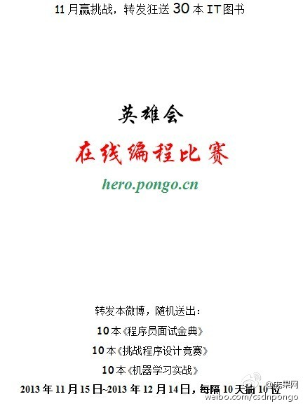
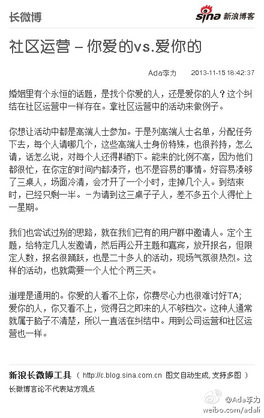
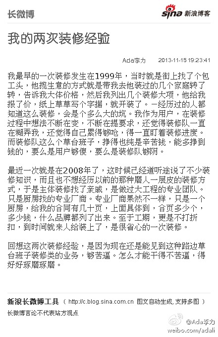

//@刘江总编:这两天#MDCC#移动开发者大会的演讲稿已经上传到CSDN Share了：网页链接 推到 @极客头条@_李宁_:#MDCC# 大会全部PPT（足本，可下载）share.csdn.net/tags/MDCC2013
客服案例之博客乱码：有个移动领域博主投诉，博客产品升级后，他的代码排版全乱了，要求我们这边给解决下。 客服把问题转到博客运营人员，运营人员转到研发人员，研发人员说升级只是增加了对Obj...文字版>> 网页链接 （新浪长微博>> 网页链接） 
促进会员之间找合作机会及相互交换资源，是CTO俱乐部以后办活动的一个方向啊。[呵呵]@CTO俱乐部:由于晚宴场地限制桌椅只能摆成长条形，增加的自我介绍环节各有精彩，有找合作伙伴的、有个人近期动态更新的，特别是可提供产品折扣给俱乐部会员的激起大家浓厚的兴致，别忘了承诺的兑现啊 @徐继哲 @才华烨 @凌乱浔倪 @李华香_紫铃 @蒙洋老师 @我是王潇 @绝版青春 @邹学勇- 网页链接
//@研究者July: 转发抢书，极度给力！30天内狂送30本，10本《程序员面试金典》，10本《挑战程序设计竞赛》，10本《机器学习实战》，人品终极比拼，伙伴们火速开抢啦！@CSDN_JOB:「11月赢挑战，转发送书30本」在线编程网站Hero英雄会，数千人同台竞技，coding中见高低，欢迎火速来挑战，猛戳：网页链接 ！同时，转发本微博，送出10本《程序员面试金典》，10本《挑战程序设计竞赛》，10本《机器学习实战》，每隔10天抽10位，30天内狂送30本，人品大比拼，伙伴们开枪拉！ 
社区运营－你爱的vs.爱你的：婚姻里有个永恒的话题，是找个你爱的人，还是爱你的人？这个纠结在社区运营中一样存在。拿社区运营中的活动来做例子。 你想让活动中都是高端人士参加。于是列高端人...文字版>> 网页链接 （新浪长微博>> 网页链接） 
我的两次装修经验： 我最早的一次装修发生在1999年，当时就是街上找了个包工头，他揽生意的方式就是带我去他装过的几个家庭转了转，告诉我大体价格，然后我列出几个装修大项，他给我报了价，纸...文字版>> 网页链接 （新浪长微博>> 网页链接） 